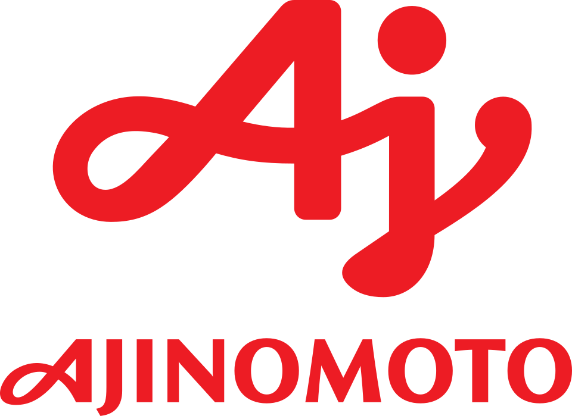

아지노모도 Ajinomoto
아지노모도(Ajinomoto)는 1925년에 설립된 일본의 식품 기업이다. 글루탐산 나트륨(MSG) 조미료 제품 '아지노모도'를 비롯하여 다양한 식품을 생산한다.
최종 업데이트

아지노모도는 어떤 브랜드인가
아지노모도(Ajinomoto)는 일본의 식품 기업으로 널리 알려져 있다. 이 브랜드는 아미노산 생산 기술을 기반으로 화학 사업과 의약 사업도 전개한다.
식품 사업 부문에서는 조미료 및 가공 식품 등의 상품이 일본 내 시장 점유율 1위를 차지한다. 아미노산 사업에서는 발효법에 의한 아미노산 제조 기술을 보유하며, 여러 아미노산 분야에서 주요 업체의 지위를 가지고 있다.
또한, 의약 사업을 통해 수액 영양 투석, 소화기병, 생활 습관병 관련 의약품을 제공한다.
아지노모도는 어떻게 시작되고 성장했나
아지노모도(Ajinomoto)의 역사는 1907년 합자회사 스즈키 제약소 설립으로 시작되었다. 화학자 이케다 기쿠나에가 글루탐산 나트륨 제조법 특허를 취득한 후, 1909년 5월 20일에 '아지노모토'의 일반 판매가 시작되었다.
이후 1912년 합자회사 스즈키 상점으로 사명을 변경했고, 1917년 주식회사 스즈키 상점을 설립하며 일본 국외로 사업을 확장했다. 1925년 12월 17일, 기존 법인들을 통합하여 주식회사 스즈키 상점을 신설했으며, 1946년 아지노모도 주식회사로 사명을 변경하며 현재의 모습을 갖추었다.
아지노모도의 브랜드 아이덴티티는 무엇인가
아지노모도(Ajinomoto)는 글루탐산 나트륨 조미료로 시작하여, 발효법에 의한 아미노산 제조 기술을 핵심으로 식품, 화학, 의약 등 다양한 분야로 사업을 확장한 것이 특징이다. 이는 단순한 식품 기업을 넘어선 이 브랜드의 정체성을 보여준다.
아지노모도의 대표 제품과 서비스는 무엇인가
아지노모도(Ajinomoto)는 식품 사업으로 '아지노모토', '혼다시' 등의 조미료와 '크노르', 'Cook Do' 등의 가공 식품을 선보인다. 이와 함께 외식·샌드위치 제품과 냉동 식품을 제공하며, 해외 시장에는 다양한 맛 조미료와 음료 등을 판매한다.
아미노산 사업은 글루탐산을 포함한 아미노산 제품, 영양 식품 '아미노 바이탈', 감미료 '아스파탐', 향장품 및 화학 제품을 아우른다. 또한 의약 사업을 통해 수액 영양 투석, 소화기병, 생활 습관병 관련 의약품과 의약 중간체, 사료용 아미노산을 생산한다.
아지노모도는 지금 어떤 상태인가
아지노모도(Ajinomoto)는 1981년에 의약 사업에 진출하며 사업 영역을 확장했다. 2003년 3월 3일에는 한국법인 한국아지노모도㈜를 설립하며 한국 시장에 진출했다.
이후 2017년 12월 21일에는 농심과 합작 회사 제휴를 맺었으며, 2018년 3월 3일 아지노모도농심푸즈를 설립했다. 2018년 1월 3일에는 합작 회사의 평택공장 부지 착공이 진행되었다.
아지노모도 로고는 어떻게 변해왔나
자주 묻는 질문
아지노모도는 어느 나라 브랜드인가요?
아지노모도는 일본의 식음료 브랜드입니다.
아지노모도는 언제 설립되었나요?
아지노모도는 1925년 설립되었습니다.
아지노모도의 브랜드 아이덴티티는 무엇인가요?
아지노모도(Ajinomoto)는 글루탐산 나트륨 조미료로 시작하여, 발효법에 의한 아미노산 제조 기술을 핵심으로 식품, 화학, 의약 등 다양한 분야로 사업을 확장한 것이 특징이다.
아지노모도의 대표 제품은 무엇인가요?
아지노모도(Ajinomoto)는 식품 사업으로 '아지노모토', '혼다시' 등의 조미료와 '크노르', 'Cook Do' 등의 가공 식품을 선보인다.
아지노모도는 현재 어떤 상태인가요?
아지노모도(Ajinomoto)는 1981년에 의약 사업에 진출하며 사업 영역을 확장했다.
아지노모도의 창업자는 누구인가요?
아지노모도의 창업자는 이케다 기쿠나에입니다(위키데이터 기준).
아지노모도의 본사는 어디에 있나요?
아지노모도의 본사는 Ajinomoto Headquarters Building에 있습니다(위키데이터 기준).
출처와 검증
아지노모도 관련 참고: 공식 웹사이트 · 위키데이터 Q412826 · 한국어 위키백과 · 영어 위키백과. 브랜드명은 한글과 원어를 함께 표기하되 데이터에 없는 표기는 만들지 않습니다. 기원 국가·설립연도는 검수된 정의문에서 확인된 값을 우선하고, 없을 때만 공식 웹사이트 URL이 일치하는 위키데이터 개체의 값을 씁니다. 위키데이터 값은 2026-09-07 기준입니다.